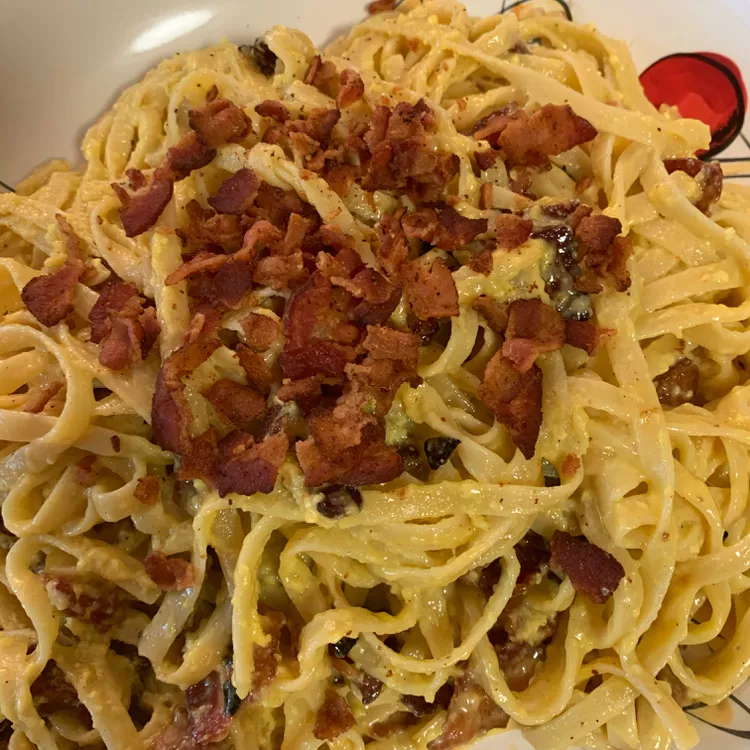

Carbonara Pasta

Description
Lots of crispy bacon is tossed with hot, buttered noodles, whipped egg and cream, and a generous measure of Parmesan cheese to make this delicious classic. Stir until the heat of the pasta cooks the eggs, then serve with parsley and ground pepper.
Ingredients
- 1/2 pound bacon
- 4 eggs
- 1/4 cup heavy cream
- 1 cup grated Parmesan cheese
- 16 ounces dry pasta
- 1/4 cup butter
- 1/4 cup chopped parsley
- ground black pepper to taste
Steps
- Cook bacon until crisp. Drain on paper towels.
- In medium bowl beat together eggs and cream just until blended. Stir in cheese and set aside.
- Cook pasta according to package directions. Drain and return to pan. Toss with butter until it is melted. Add bacon and cheese mixture and toss gently until mixed.